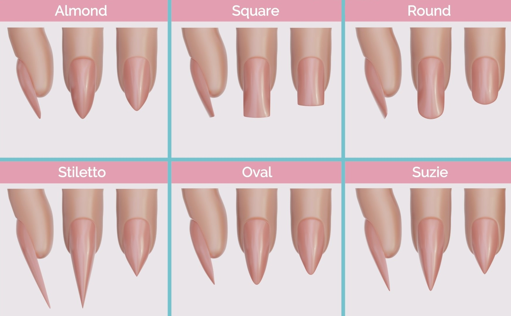
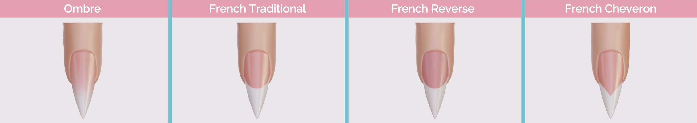
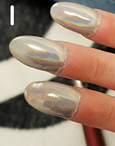
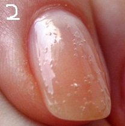
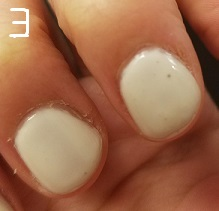
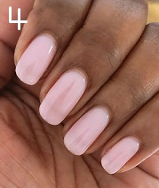

What is Nail Care?
Nail care refers to the proper maintence of the fingernails and toenails. This is important for health as well as cosmetic reasons. It helps prevent nail problems, such as fungal nail infections and ingrown toenails.
FUN FACT!
The word 'manicure' is from the Latin manus (hand) and curo (care)!
Shapes and Designs


The quickest way to determine the best shape for you is to mimic the shape of your cuticles. Most peple request short, rounded square nails at the salon. It is important to always research ideas which makes it easier to communicate with customers.
* CLICK HERE to see additional pictures about nails *
Responsibilities
Daily duties include providing nail and hand services to customers, such as basic manicures, artificial nails, gel nails, hand massages, hot-oil therapy, nail fills, nail repair, nail wraps and nail polishing. Pedicures and the application of acrylic toenails may also be performed. Technicians examine and evaluate the condition and appearance of nails to provide advice on proper nail care. They must be familiar with diseases and disorders of the nails, as well as all safety procedures and techniques for performing nail services. They use sterilization equipment and must know how to properly sterilize and sanitize their tools. Manicurists ensure safety procedures are followed while performing manicures or pedicures.
Important Skils for Nail Techicians
- Communication and conversation
- Reliability
- Leadership
- Trendspotting
- Precision
- Concentration
Services
- Classic Manicures/Pedicures
- Spa Manicures/Pedicures
- Polish Change
- Nail Extension (enhancements)
- Shellac Finish
- Shellac/Gel Removal
QUIZ!
Question 1.
Which one is not a shape or design for nails?
- Suzie
- French Inverse
- Stiletto
- French Traditional
- Almond
Answer:
Question 2.
(Read the scenario to answer the following question)
Jessica, your regular guest, calls you an hour after her manicure and explains that her polish smudged on one of
her nails. How should you proceed?
1) Explain to Jessica it is her fault but you will fix the nail polish; however, she will be charged for a polish
change.
2) Invite Jessica to come back to the salon and fix the nail polish at no cost.
3) Explain to Jessica that you cannot guarantee the longevity of the polish.
4) Complain to Jessica that she should have made sure her nails were completely dry before leaving the salon so
you will not fix the nail polish.
Answer:
Question 3.
Which of these nails are properly taken care of?
   
Answer:
Question 4.
What is the fastest way to determine the best shape of a client's nails?
- Length of the fingers
- Size of the hands
- Shape of the cuticles
- None above
Answer:
After finishing this quiz, press this to find out how you did on it!